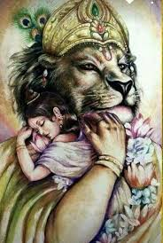
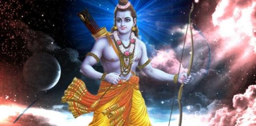

Three avatharas of lord vishnu
NARASHIMA

Narasimha (Sanskrit: नरसिंह IAST: Narasiṃha, lit. man-lion) is a fierce avatar of the
Hindu god Vishnu, one who incarnates in the form of part lion and part man to destroy
evil and end religious persecution and calamity on Earth, thereby restoring Dharma.
Narasimha iconography shows him with a human torso and lower body, with a lion face
and claws, typically with a demon Hiranyakashipu in his lap whom he is in the process
of killing. The demon is powerful brother of evil Hiranyaksha who had been previously
killed by Vishnu, who hated Vishnu for killing his brother. Hiranyakashipu gains special
powers by which he could not be killed during the day or night, inside or outside, by any weapon,
and by man or animal. Endowed with new powers, Hiranyakashipu creates chaos, persecutes all
devotees of Vishnu including his own son.Vishnu understands the demon's power, then creatively
adapts into a mixed avatar that is neither man nor animal and kills the demon at the junction of
day and night, inside and outside.[1] Narasimha is known primarily as the 'Great Protector'
who specifically defends and protects his devotees from evil. The most popular Narasimha mythology
is the legend that protects his devotee Prahlada, and creatively destroys Prahlada's demonic
father and tyrant Hiranyakashipu.
RAMACHANDRA

Rama or Ram (/ˈrɑːmə/; Sanskrit: राम, IAST: Rāma // (About this soundlisten)), also known as Ramachandra,
is a major deity of Hinduism. He is the seventh avatar of the god Vishnu, one of his most popular
incarnations along with Krishna, Parshurama, and Gautama Buddha. Jain Texts also mentioned Rama as
eighth balabhadra among the 63 salakapurusas. In Rama-centric traditions of Hinduism,
he is considered the Supreme Being.Rama was born to Kaushalya and Dasharatha in Ayodhya,
the ruler of the Kingdom of Kosala. His siblings included Lakshmana, Bharata, and Shatrughna.
He married Sita. Though born in a royal family, their life is described in the Hindu texts as one
challenged by unexpected changes such as an exile into impoverished and difficult circumstances,
ethical questions and moral dilemmas. Of all their travails, the most notable is the kidnapping
of Sita by demon-king Ravana, followed by the determined and epic efforts of Rama and Lakshmana to
gain her freedom and destroy the evil Ravana against great odds. The entire life story of Rama, Sita
and their companions allegorically discusses duties, rights and social responsibilities of an individual.
It illustrates dharma and dharmic living through model characters.
VASUDEVA
 Krishna (/ˈkrɪʃnə/, Sanskrit pronunciation: [ˈkɽɪʂɳɐ]; Sanskrit: कृष्ण, IAST: Kṛṣṇa) is a major deity in Hinduism.
Krishna (/ˈkrɪʃnə/, Sanskrit pronunciation: [ˈkɽɪʂɳɐ]; Sanskrit: कृष्ण, IAST: Kṛṣṇa) is a major deity in Hinduism.
He is worshipped as the eighth avatar of the god Vishnu and also as the supreme God in his own right.
He is the god of compassion, tenderness, love and is one of the most popular and widely revered
among Indian divinities.[11] Krishna's birthday is celebrated every year by Hindus on Krishna Janmashtami
according to the lunisolar Hindu calendar, which falls in late August or early September of the Gregorian
calendar. Krishna is usually depicted with a flute in his hand.
The anecdotes and narratives of Krishna's life are generally titled as Krishna Leela.
He is a central character in the Mahabharata, the Bhagavata Purana and the Bhagavad Gita, and is mentioned
in many Hindu philosophical, theological, and mythological texts. They portray him in various perspectives:
a god-child, a prankster, a model lover, a divine hero, and as the universal supreme being. His iconography reflects
these legends, and shows him in different stages of his life, such as an infant eating butter, a young boy playing
a flute, a young boy with his lover Radha or surrounded by women devotees, or a friendly charioteer giving counsel
to Arjuna.